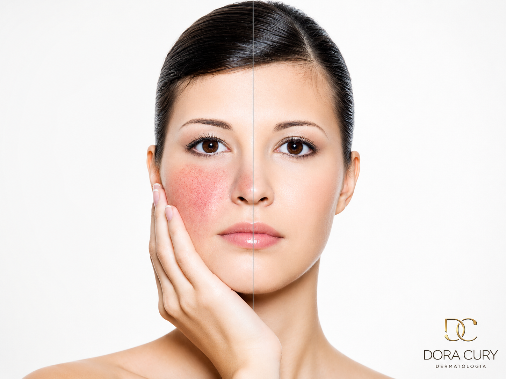

Dermatologia
Clínica & Cirúrgica
Diagnóstico e tratamento de alterações da pele, cabelos e unhas — da acne à cirurgia dermatológica.
Dermatologia Clínica & Estética Avançada
Acne, manchas, queda de cabelo, lesões de pele ou estética avançada: um cuidado dermatológico completo, com diagnóstico preciso e resultados que devolvem sua confiança.
Nossa atuação
Diagnóstico e tratamento de alterações da pele, cabelos e unhas — da acne à cirurgia dermatológica.
Protocolos personalizados que realçam sua beleza natural — com segurança, técnica e resultados discretos.
Resultados reais

DepoisAgendamento
Preencha seus dados ao lado. Nossa equipe entrará em contato para esclarecer suas dúvidas e agendar sua consulta personalizada.
A especialista
Membro da SBD e da SBCD e professora da FAMERP, a Dra. Doramárcia une formação acadêmica de excelência à prática diária — cuidando de cada paciente como um todo, da clínica à estética.
Dúvidas frequentes
Tudo começa com uma avaliação individualizada. A partir dela, a Dra. define o plano ideal — número de sessões, cuidados e o que esperar em cada etapa do tratamento.
A maioria é minimamente invasiva e permite retorno rápido à rotina. Cada procedimento inclui orientações de cuidados pós-tratamento, com acompanhamento da nossa equipe.
Depende do procedimento: alguns têm efeito imediato, outros aparecem progressivamente ao longo das sessões. Tudo é alinhado com você na avaliação inicial.